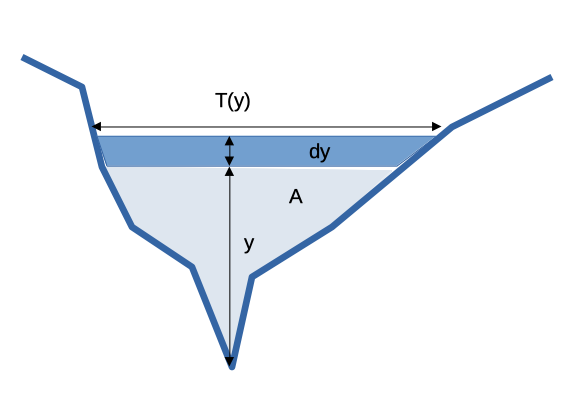
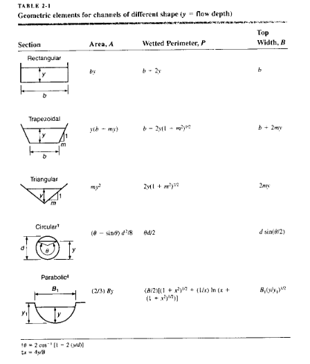
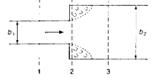
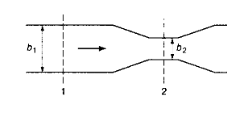
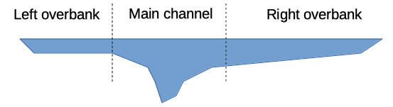

Froude Number#
Recall the Froude number,
The specific energy diagram identifies three flow regimes:
supercritical; characterized by small \(y\), large \(V\), greater than wave celerity \(c\), \(Fr >1\)
critical; minimum specific energy for the channel and flow; \(y=y_c\), \(Fr = 1\), velocity is wave celerity.
subcritical;characterized by large \(y\), small \(V\), smaller than wave celerity \(c\), \(Fr <1\)
Wave celerity is speed of shallow waves on watre surface. Drop a pebble on water, ripples move away from the impact, speed of the ripples is the celerity - controlled largely by water depth.
Choking is the situation where the channel bottom is high enough or downstream width is small enough to just start to slow flow and cause the flow depth to increase.
Critical Depth Non-Rectangular#
Generally use the depth measured from thalweg point, and apply principles of continunity already described, key is

So the hydraulic characteristics are quite important. We obtain the depth-area, depth-perimeter, depth-topwidth functions for odd shapes by numerical tabulations and interpolation.
at critical depth
In terms of hydraulic depth we have
and at critical flow
and substitution gives
Table 2.1 copied below has geometric element equations for a few common geometries:

An on-line calculator that can handle trapezoidal, triangular and rectangular is at
Trapezoidal Channel Geometric Elements
and a similar tool for circular channels is at
Circular Channel Geometric Elements
Contractions & Expansions#
The general equation for steady flow in expansions

and/or contractions

is
where the last term is the change in velocity head multiplied by a loss coefficient (structurally like a Darcy-Wiseass head loss model)
applicable when \(Fr<\frac{1}{2}\)
Expansions tend to have higher head loss because of the flow separation in the wake/shadow formed by the walls at the abrubt change in width. If the designer arranges for a smooth transition the head loss can be minimized but not eliminated.
For contractions the following is often applied
the lower value for a rounded transition, the larger for a sharp transition.
Overbank Flow#

Different resistance to flow in different parts of the cross section. Can obtain different \(y_c\) in each part of the cross section. Can also have large velocity differences across the section with high velocities in the main channel section (usually) and possibly very low velocities in the overbanks. It creates a problem for 1-D models if the velocity itself is important (as opposed to just getting the total discharge right).